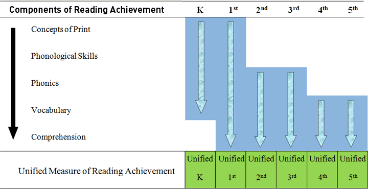

About CBAS-R
Current Status of the Project
Currently, the project is transitioning into a Computer Adaptive Test (CAT) which is available online. Data is being collected from various schools, all K-5, using the online software to test the current capability of C-BAS-R online. Other data on student reading achievement (such as oral reading fluency scores, Gates – MacGinitie scores, etc.) is also being collected from these schools in order to evaluate the accuracy and predictive ability of C-BAS-R.
The purpose of this project is to expand and refine a technology for an instructionally relevant assessment for use to support Response to Intervention. Research and theory are used to inform the development and evaluation of the CBAS-R item bank so that it yields instructionally relevant information that will guide services to students with disabilities within an RtI model.
Eventually, CBAS-R is expected to be utilized by schools as a screening tool for Fall, Winter, and Spring as well as a progress monitoring tool. The ultimate goal for CBAS-R is to become a Computer Adaptive Test, which can be individually or group administered, that can give schools an accurate and precise measure of student’s reading abilities. This goal will be accomplished through the following objectives:
- Objective 1: Develop items and coding procedures, select linking items, and field test sets of items using a linking procedure for establishment of item parameters.
- Objective 2: Develop a Computer Adaptive Test (CAT) using the previously developed items. As a CAT, the result will be a CBAS product that is amenable and adaptable to a wide range of reading abilities and levels of achievement.
- Objective 3: Test the feasibility of the CBAS-R for in-classroom screening or interim assessment with skills-based diagnosis of strengths/weaknesses in K-5th reading achievement.
The project focuses on five areas of reading: Concepts of Print, Phonics, Phonological Awareness, Vocabulary, and Comprehension. CBAS-R will provide domain specific assessments of specific component skills and a general estimate of overall reading achievement, which we define as the Unified Measure of Reading Achievement (see Figure below). Download our introductory PowerPoint (to learn more about CBAS-R) or download our advertisement!
The CBAS-R A-Priori Model
